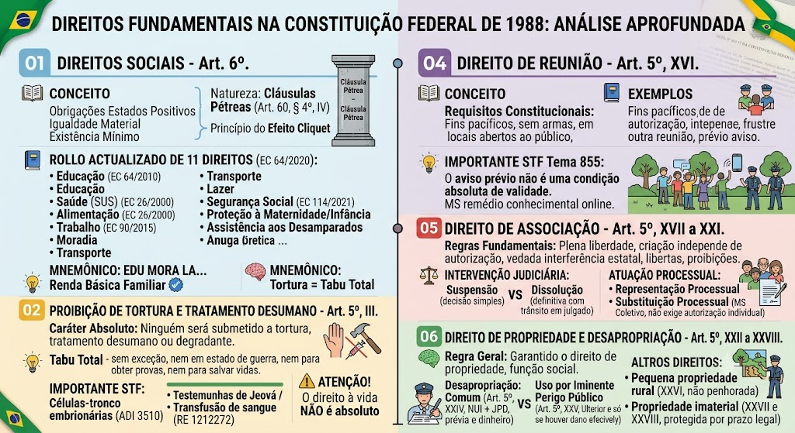
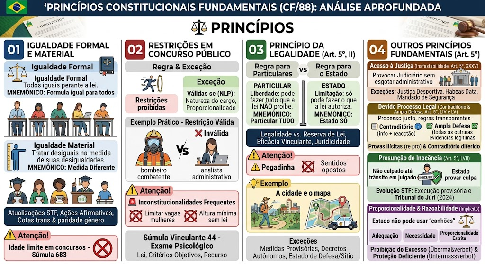
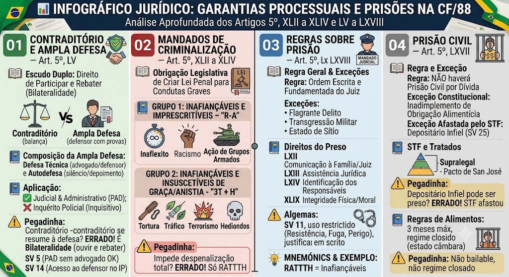
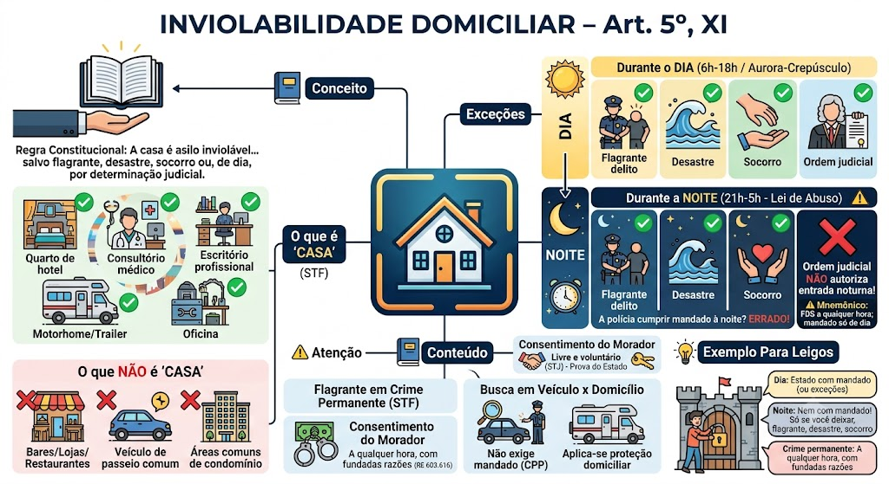
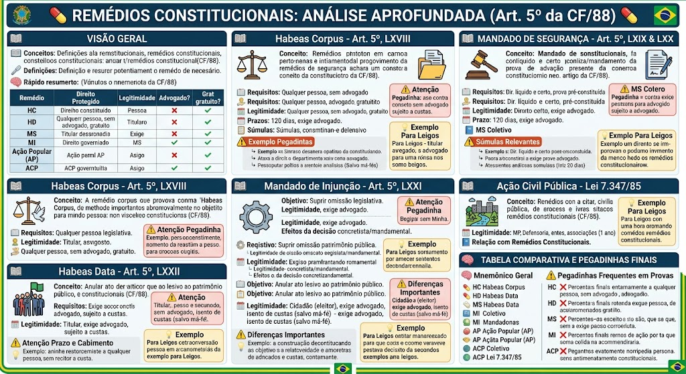

Conceito e Natureza
Conceito e Natureza
Conceito: Prestações positivas do Estado (obrigações de fazer/fornecer) para garantir a igualdade material e o mínimo existencial.
Natureza: Cláusulas Pétreas (Art. 60, § 4º, IV). Não podem ser abolidas por Emenda Constitucional.
Princípio do Efeito Cliquet (Proibição do Retrocesso Social): Direitos sociais já conquistados e regulamentados não podem ser simplificadamente revogados ou suprimidos sem uma compensação equivalente.
Direitos sociais são prestações exigíveis judicialmente – a omissão do Estado na sua efetivação pode gerar responsabilidade civil e obrigação de implementar políticas públicas, sempre respeitando a reserva do possível e o mínimo existencial.
Rol dos Direitos Sociais (Art. 6º) – Atualizado
Rol dos Direitos Sociais (Art. 6º) – Atualizado
São direitos sociais, na redação atual da CF/88:
1. Educação
2. Saúde (SUS)
3. Alimentação (EC 64/2010)
4. Trabalho
5. Moradia (EC 26/2000)
6. Transporte (EC 90/2015)
7. Lazer
8. Segurança (proteção da integridade e patrimônio)
9. Previdência Social
10. Proteção à Maternidade e à Infância
11. Assistência aos Desamparados
🆕 Parágrafo único (EC 114/2021): Renda Básica Familiar – garantida a todos os cidadãos, na forma da lei, como direito social autônomo.
🧠 MNEMÔNICO ATUALIZADO
🧠 MNEMÔNICO ATUALIZADO
\"EDU MORA LA, SAU TRABALHA ALI, ASSISTE PRES TETA COM TRANSPORTE E SEGURANÇA\"
- EDUcação
- MORAdia
- Lazer
- SAÚde
- TRABALHO
- ALImentação
- ASSISTência aos desamparados
- PREvidência
- TETA (proteção à maternidade/infância)
- TRANSPORTE
- SEGURANÇA
Para Leigos – Cláusula Pétrea
Para Leigos – Cláusula Pétrea
Cláusula pétrea significa regra intocável – escrita na pedra, não tem como apagar! Mesmo que Congresso vote, Presidente apoie e todos concordem, não podem tirar seus direitos à educação, saúde e trabalho. São pilares de concreto da nossa sociedade.
Dupla Dimensão
Dupla Dimensão
Sentido NEGATIVO: Direito de não ser morto / não ter a integridade violada.
Sentido POSITIVO: Direito de viver com dignidade (vida digna).
🧠 MNEMÔNICO: \"Vida = NÃO morrer + Viver bem\"
🚨 O direito à vida NÃO é absoluto – existem exceções constitucionais e legais.
Início da Proteção e Exceções
Início da Proteção e Exceções
Início da proteção: Desde a concepção (embrião/feto), porém com flexibilizações admitidas pelo STF.
Exceções (mitigação da vida):
- Pena de morte: Proibida, salvo em caso de guerra declarada (Art. 5º, XLVII, \"a\").
- Aborto legal: Gravidez resultante de estupro ou risco de vida para a gestante (Código Penal).
- Anencefalia: STF (ADPF 54) – interrupção da gravidez de feto anencéfalo não é crime.
- Legítima defesa e estado de necessidade – excluem a ilicitude do ato (Código Penal, Arts. 23 e 24).
Decisões Importantes do STF
Decisões Importantes do STF
Células-tronco embrionárias (ADI 3510): É constitucional o uso de células-tronco embrionárias inviáveis para pesquisas científicas (não viola o direito à vida).
Testemunhas de Jeová / Transfusão de sangue (RE 1212272): Pessoas maiores e capazes podem recusar procedimentos médicos que envolvam transfusão de sangue por motivos religiosos, devendo o Estado/hospital fornecer tratamentos alternativos quando disponíveis.
Vacinação compulsória (RE 1267879): O STF decidiu que a vacinação obrigatória é constitucional, desde que respeitadas as medidas indiretas (ex.: restrições a quem não se vacinar), podendo o Estado impor a vacinação por lei, sem violar o direito à vida, mas sim protegendo-o.
⚠️ Pegadinha
⚠️ Pegadinha
A banca frequentemente afirma que o direito à vida é absoluto. ERRADO. O direito à vida admite exceções (pena de morte em guerra, aborto legal, anencefalia, legítima defesa, etc.), diferentemente da proibição de tortura, que é absoluta.
Regra e Caráter Absoluto
Regra e Caráter Absoluto
Art. 5º, III: 'Ninguém será submetido a tortura nem a tratamento desumano ou degradante.'
Regra: é proibida a tortura, tratamento desumano e degradante.
Caráter absoluto: essa proibição é uma das poucas com caráter verdadeiramente absoluto — não admite exceção, nem em estado de guerra, nem para obter provas, nem para salvar vidas.
🧠 MNEMÔNICO: 'Tortura = Tabu Total — sem exceção'
Para Leigos – Tabu Total
Para Leigos – Tabu Total
'Absoluto' significa zero exceções. Mesmo que um terrorista saiba onde está uma bomba que vai matar mil pessoas, a polícia NÃO pode torturá-lo. Mesmo em guerra, NÃO pode torturar prisioneiros. Isso é um TABU TOTAL na civilização ocidental. Nenhum objetivo, por mais nobre que seja, justifica tortura.
⚠️ Pegadinha clássica (Cebraspe/FGV)
⚠️ Pegadinha clássica (Cebraspe/FGV)
❌ 'A proibição de tortura tem exceção em estado de guerra.' → ERRADO.
❌ 'A proibição de tortura pode ser excepcionada para obter provas.' → ERRADO.
❌ 'A tortura é permitida em casos de terrorismo para salvar vidas.' → ERRADO.
A proibição é absoluta e não comporta ponderação com outros interesses.
Distinção: Tortura x Outros Direitos
Distinção: Tortura x Outros Direitos
A maioria dos direitos fundamentais NÃO é absoluta (ex: liberdade de expressão tem limites, direito de propriedade pode ser desapropriado).
A proibição de tortura é uma das poucas com caráter verdadeiramente absoluto, ao lado da proibição de pena de morte (salvo guerra) e da proibição de escravidão, mas com a diferença de que a tortura não tem exceção alguma.
🧠 MNEMÔNICO: 'Tortura não tem 'mas' nem 'porém' — é proibida sempre e em qualquer situação.'
Requisitos Constitucionais
Requisitos Constitucionais
São requisitos para o exercício do direito de reunião:
- Fins pacíficos;
- Sem armas;
- Em locais abertos ao público;
- Independe de autorização do Estado;
- Não frustre outra reunião anteriormente convocada para o mesmo local;
- Prévio aviso à autoridade competente.
Atualização do STF – Tema 855 (Aviso Prévio)
Atualização do STF – Tema 855 (Aviso Prévio)
O aviso prévio não é uma condição absoluta de validade. Se a reunião for divulgada publicamente (ex.: redes sociais, cartazes) e a autoridade pública tomar conhecimento por esse meio, a exigência constitucional do aviso prévio é considerada cumprida. A polícia não pode dissolver a reunião apenas alegando a ausência de um 'ofício formal'.
Remédio Cabível
Remédio Cabível
A proibição/negativa ilegal do direito de reunião enseja Mandado de Segurança.
Exemplo: Marcha da maconha é permitida (STF).
⚠️ Pegadinha
Reunião pacífica depende de autorização → ERRADO. Exige apenas aviso prévio, não autorização. A polícia não pode proibir, só fiscalizar.
Regras Fundamentais
Regras Fundamentais
- Plena liberdade de associação para fins lícitos;
- Criação de associações e cooperativas independem de autorização, sendo vedada a interferência estatal em seu funcionamento (Art. 5º, XVIII);
- Libertas (voluntariedade): Ninguém será compulsoriamente associado ou mantido associado;
- Proibições: Associações de caráter paramilitar (vedadas) e fins ilícitos.
Intervenção Judiciária nas Associações
Intervenção Judiciária nas Associações
- Suspensão das atividades: Exige decisão judicial (pode ser liminar/provisória);
- Dissolução compulsória (extinção): Exige decisão judicial com trânsito em julgado (definitiva, sem mais recursos).
🧠 MNEMÔNICO: \"Suspensão = Só decisão simples / Dissolução = Definitiva (Trânsito em julgado)\".
Atuação Processual da Associação
Atuação Processual da Associação
- Representação processual (Art. 5º, XXI): Para a associação defender seus membros em juízo, exige autorização expressa dos associados (não basta previsão genérica no estatuto).
- Substituição processual (Mandado de Segurança Coletivo – Art. 5º, LXX): Quando a associação impetra MS Coletivo, ela NÃO precisa de autorização individual de cada membro (age em nome próprio defendendo direito alheio).
Exemplo Prático
Exemplo Prático
Você faz parte de uma associação de moradores. A associação NÃO pode automaticamente te representar na Justiça – você tem que dar autorização por escrito (procuração). A não ser que seja uma ação COLETIVA que beneficie todos os moradores igualmente, como um Mandado de Segurança Coletivo.
Regra Geral e Desapropriação Comum
Regra Geral e Desapropriação Comum
Regra: É garantido o direito de propriedade, desde que cumprida sua função social (Art. 5º, XXII e XXIII).
Desapropriação (Art. 5º, XXIV):
- Motivos: Necessidade pública, Utilidade pública ou Interesse social.
- Indenização: Prévia, justa e em dinheiro.
🧠 MNEMÔNICO: \"NUI + JPD\" – Necessidade, Utilidade, Interesse + Justa, Prévia, Dinheiro.
Uso por Iminente Perigo Público (Art. 5º, XXV)
Uso por Iminente Perigo Público (Art. 5º, XXV)
Em caso de iminente perigo público, a autoridade competente pode usar propriedade particular.
- Indenização: Ulterior (depois), e somente se houver dano efetivo.
⚠️ Pegadinha: Na desapropriação normal → indenização PRÉVIA. No uso por perigo → indenização ULTERIOR (se houver dano).
Outros Incisos Relevantes (XXVI a XXVIII)
Outros Incisos Relevantes (XXVI a XXVIII)
- Pequena propriedade rural (Art. 5º, XXVI): A pequena propriedade rural, desde que trabalhada pela família, não será objeto de penhora para pagamento de débitos decorrentes de sua atividade produtiva.
- Propriedade imaterial (Art. 5º, XXVII e XXVIII): Direitos de autor e patentes são protegidos, com prazo legal.
Exemplo de Emergência
Exemplo de Emergência
Imagine uma enchente devastadora. A polícia precisa usar seu terreno para montar um abrigo emergencial. Nesse caso, podem entrar sem pagar antes (é emergência!), mas se quebrarem seu portão, depois têm que indenizar. Se não danificar nada, não paga nada.
Direito à Igualdade (Art. 5º, caput e I)
Direito à Igualdade (Art. 5º, caput e I)
Igualdade formal (perante a lei): Todos são iguais perante a lei, sem distinção de qualquer natureza.
Igualdade material (na lei): O Estado deve tratar desigualmente os desiguais, na medida de sua desigualdade, para promover a justiça social (ações afirmativas, cotas, etc.).
🧠 MNEMÔNICO: \"Igualdade = Formal (mesma regra) + Material (regras diferentes para realidades diferentes)\"
Teorias:
- Igualdade formal (republicana)
- Igualdade material (justiça distributiva)
- Igualdade como reconhecimento (identidade cultural)
Liberdade de Expressão e Informação (Art. 5º, IV, V, IX, XIV)
Liberdade de Expressão e Informação (Art. 5º, IV, V, IX, XIV)
Liberdade de expressão (IV): É livre a manifestação do pensamento, sendo vedado o anonimato.
Liberdade de crença e consciência (VI): Inviolável a liberdade de consciência e de crença, sendo assegurado o livre exercício dos cultos religiosos.
Liberdade de informação (IX, XIV): É livre a expressão da atividade intelectual, artística, científica e de comunicação, independentemente de censura ou licença; assegurado o direito de resposta proporcional ao agravo.
Limites:
- Vedação ao anonimato (responsabilização)
- Direito de resposta
- Indenização por dano material/moral
- Não pode ferir a honra, intimidade, vida privada
- Crime de racismo (inafiançável e imprescritível – Art. 5º, XLII)
Direito de Locomoção e Devido Processo Legal (Art. 5º, XV e LIV)
Direito de Locomoção e Devido Processo Legal (Art. 5º, XV e LIV)
Livres locomoção (XV): É livre a locomoção no território nacional em tempo de paz, podendo qualquer pessoa, nos termos da lei, nele entrar, permanecer ou dele sair com seus bens.
Devido processo legal (LIV): Ninguém será privado da liberdade ou de seus bens sem o devido processo legal, que exige:
- Contraditório e ampla defesa (LV): aos litigantes, em processo judicial ou administrativo, e aos acusados em geral são assegurados o contraditório e ampla defesa, com os meios e recursos a ela inerentes.
- Juiz natural (LIII): ninguém será processado nem sentenciado senão pela autoridade competente.
- Presunção de inocência (LVII): ninguém será considerado culpado até o trânsito em julgado de sentença penal condenatória.
Garantias Penais e Processuais (Art. 5º, XXXVII a LXVII)
Garantias Penais e Processuais (Art. 5º, XXXVII a LXVII)
Principais garantias:
- Irretroatividade da lei penal (XL): a lei penal não retroagirá, salvo para beneficiar o réu.
- Legalidade penal (XXXIX): não há crime sem lei anterior que o defina, nem pena sem prévia cominação legal.
- Proibição de penas cruéis (XLVII): não haverá penas de morte (salvo guerra), de caráter perpétuo, de trabalhos forçados, de banimento ou cruéis.
- Limitação das penas (XLVIII): a pena será cumprida em estabelecimentos distintos, de acordo com a natureza do delito, idade e sexo do apenado.
- Prisão civil (LXVII): não haverá prisão civil por dívida, salvo a do responsável pelo inadimplemento voluntário e inescusável de obrigação alimentícia e a do depositário infiel (este último com restrições em face de tratados internacionais).
Mapa-mental
Igualdade Formal
Igualdade Formal
Todos são iguais perante a lei — tratamento isonômico sem distinções arbitrárias.
Exemplo: concurso público para ingresso no cargo, com as mesmas regras para todos os candidatos.
🧠 MNEMÔNICO: \"Formal = Fórmula igual para todos\"
Igualdade Material
Igualdade Material
Tratar desiguais na medida de suas desigualdades — busca a justiça real, compensando diferenças fáticas para garantir oportunidades equivalentes.
Exemplo: cotas raciais ou sociais em universidades e concursos públicos.
🧠 MNEMÔNICO: \"Material = Medida Diferente\"
Aprofundamento e Atualizações STF
Aprofundamento e Atualizações STF
Fórmula Aristotélica (clássica): 'tratar igualmente os iguais e desigualmente os desiguais, na medida de suas desigualdades'.
Ações Afirmativas: expressão técnica para cotas e políticas públicas de inclusão (decorrem da igualdade material).
STF (PM/Bombeiros): É inconstitucional criar teto/limite de vagas para mulheres em concursos da Polícia Militar e Corpo de Bombeiros. Homens e mulheres devem concorrer em igualdade de condições à disputa das vagas, sendo vedada a criação de teto ou reserva de vagas que limite a participação feminina, sob pena de ofensa à igualdade material e ao mérito.
Para Leigos – Concurso para policial
Para Leigos – Concurso para policial
Imagine um concurso para policial:
📏 Igualdade FORMAL — Mesma regra: 1,70m para homens E mulheres. ❌ Exclui mais mulheres.
⚖️ Igualdade MATERIAL — Tratamento diferente para chances iguais: 📋 Cotas raciais, 📐 Altura proporcional.
💡 Resumo: Igualdade formal = mesma regra. Igualdade material = justiça real.
Ações Afirmativas além das cotas – STF
Ações Afirmativas além das cotas – STF
Cotas para transgêneros: O STF reconheceu a autonomia universitária para instituir cotas para pessoas trans em universidades, assim como a possibilidade de concursos públicos adotarem reserva de vagas para trans, desde que haja lei e critérios objetivos.
Paridade de gênero na política: O STF e o TSE firmaram entendimento de que os partidos devem destinar recursos do fundo partidário e do fundo eleitoral proporcionalmente ao número de candidaturas lançadas por cada gênero, assegurando a efetiva participação feminina na política e a aplicação dos recursos de forma paritária, conforme decidido nas ADIs 5.617 e 5.618.
Idade limite em concursos – Súmula 683
Idade limite em concursos – Súmula 683
Súmula 683 do STF: 'O limite de idade para a inscrição em concurso público só se legitima quando justificado pela natureza das atribuições do cargo'.
⚠️ Pegadinha: A mera alegação de que o cargo exige 'disposição física' não basta; é necessário demonstrar que a idade máxima é essencial para o desempenho das funções (ex: piloto de avião, bombeiro combatente).
Exemplo: Concurso para policial civil com idade máxima de 30 anos – se o edital previr idade máxima sem que a lei que instituiu o cargo demonstre, de forma objetiva, a essencialidade desse requisito para o desempenho das funções, a cláusula será considerada inválida e passível de anulação judicial.
Restrições em Concurso Público – Regra e Exceção
Restrições em Concurso Público – Regra e Exceção
Regra: restrições em concurso público são proibidas.
Exceção: permitidas se houver cumulativamente:
- Natureza do cargo justificar
- Previsão em lei
- Proporcionalidade
🧠 MNEMÔNICO: \"NLP\" — Natureza, Lei, Proporção
🚨 Inconstitucionalidades Frequentes
🚨 Inconstitucionalidades Frequentes
⚠️ É inconstitucional: limitar percentual de vagas para mulheres (STF).
⚠️ Pegadinha clássica: altura mínima sem justificativa legal → inconstitucional.
Exemplo Prático – Restrição Válida
Exemplo Prático – Restrição Válida
Concurso para bombeiro exige altura mínima de 1,65m.
✅ Válido: porque a natureza do cargo (salvamento, carregar pessoas) justifica, há previsão em lei e é proporcional.
❌ Inválido: concurso para analista administrativo exige altura mínima — não há relação com a natureza do cargo.
Súmula Vinculante 44 – Exame Psicológico
Súmula Vinculante 44 – Exame Psicológico
SV 44: 'Só é válida a realização de exame psicológico em concursos públicos quando houver previsão legal, critérios objetivos no edital e possibilidade de recurso administrativo contra o resultado'.
⚠️ Pegadinha: O exame psicológico não pode ser discricionário ou subjetivo; deve ter critérios claros e direito à interposição de recurso. A ausência de qualquer desses requisitos torna o exame inválido e passível de anulação judicial.
Princípio da Legalidade — Art. 5º, II – Regra para Particulares
Princípio da Legalidade — Art. 5º, II – Regra para Particulares
Ninguém será obrigado a fazer ou deixar de fazer alguma coisa senão em virtude de lei.
Para o particular, a legalidade funciona como liberdade: pode fazer tudo que a lei não proíbe.
Princípio da Legalidade – Regra para o Estado (Legalidade Administrativa)
Princípio da Legalidade – Regra para o Estado (Legalidade Administrativa)
O Estado só pode fazer o que a lei expressamente autoriza.
Para a Administração Pública, a legalidade funciona como limitação: só pode agir conforme a lei.
Diferença Fundamental
Diferença Fundamental
PARTICULAR — Pode fazer tudo que a lei NÃO proíbe. Liberdade = regra.
ESTADO — Só pode fazer o que a lei autoriza. Limitação = regra.
🧠 MNEMÔNICO: \"Particular TUDO, Estado SÓ o que pode\"
Legalidade vs. Reserva de Lei (Super cobrado!)
Legalidade vs. Reserva de Lei (Super cobrado!)
Princípio da Legalidade: o ato deve ter amparo no ordenamento jurídico em sentido amplo (leis, decretos, atos normativos).
Reserva de Lei: determinadas matérias exigem obrigatoriamente lei formal (aprovada pelo Poder Legislativo), não podendo ser disciplinadas por decretos ou portarias. Ex: criação de crimes e impostos.
Eficácia Vinculante: o gestor público não pode agir por mera vontade ou omissão legal; a omissão da lei para o Estado significa proibição de agir.
⚠️ Pegadinha
A banca afirma que o princípio da legalidade significa que todos devem seguir a lei da mesma forma. ERRADO. Para o particular é liberdade; para o Estado é limitação — são sentidos opostos!
Para Leigos – A cidade e o mapa
Para Leigos – A cidade e o mapa
Imagine que você é uma pessoa comum: pode ir ao shopping, comer pizza, assistir filme — ninguém proíbe! Mas o governo é diferente: só pode construir um hospital se a lei autorizar, só pode cobrar imposto se a lei permitir. Você tem liberdade; o governo tem limites. É como se você pudesse andar por toda a cidade, mas o governo só pode andar pelas ruas que o mapa (lei) permite.
Legalidade Administrativa e Juridicidade
Legalidade Administrativa e Juridicidade
No Direito Administrativo moderno, o princípio da legalidade evoluiu para o conceito de juridicidade: a Administração não está submetida apenas à lei em sentido estrito, mas a todo o bloco de constitucionalidade (princípios, valores e normas do ordenamento).
Exemplo: mesmo sem lei específica, o administrador deve respeitar a moralidade, a impessoalidade e a eficiência (art. 37).
🧠 MNEMÔNICO: \"Legalidade estrita é o mínimo; juridicidade é o máximo\"
Exceções à Legalidade Estrita (atos normativos do Executivo)
Exceções à Legalidade Estrita (atos normativos do Executivo)
A própria CF/88 admite situações em que o Executivo atua com margem normativa ampla, sem lei formal:
- Medidas Provisórias (art. 62) — força de lei, editadas pelo Presidente.
- Decretos Autônomos (art. 84, VI) — para organização da administração, extinção de cargos vagos e disciplina de matérias não reservadas à lei.
- Estado de Defesa e Estado de Sítio (arts. 136 a 141) — o Executivo pode restringir direitos com base em decreto, observada a reserva de lei formal para as matérias a ela constitucionalmente reservadas (como criação de tributos e normas penais), sendo que tais atos normativos do Executivo não podem inovar na ordem jurídica criando obrigações ou restrições não previstas em lei.
Princípio da Inafastabilidade da Jurisdição (Acesso à Justiça) — Art. 5º, XXXV
Princípio da Inafastabilidade da Jurisdição (Acesso à Justiça) — Art. 5º, XXXV
\"A lei não excluirá da apreciação do Poder Judiciário lesão ou ameaça a direito.\"
Conceito: Qualquer pessoa pode provocar o Poder Judiciário se tiver um direito violado ou ameaçado.
Regra: Não é obrigatório esgotar as vias administrativas para entrar na Justiça.
Exceção (atenção!): Justiça Desportiva (Art. 217, § 1º) — é necessário esgotar as instâncias da Justiça Desportiva antes de recorrer ao Judiciário (prazo máximo de 60 dias).
Inafastabilidade – Exceções Adicionais
Inafastabilidade – Exceções Adicionais
Além da Justiça Desportiva, outras exceções processuais são cobradas em provas:
- Habeas Data (HD): exige prévia recusa administrativa do órgão para acesso às informações (Súmula 2 do STJ) — não se pode ir diretamente ao Judiciário sem pedido administrativo.
- Mandado de Segurança contra ato judicial: requer o esgotamento dos recursos cabíveis ou a ausência de efeito suspensivo (Súmula 267 do STF).
- Ações previdenciárias (INSS): o segurado deve comprovar o pedido administrativo prévio ao INSS para que seja possível o ajuizamento da ação previdenciária (Súmula 269 do STJ), sob pena de carência da ação, salvo se houver pedido de antecipação de tutela ou comprovada urgência que justifique o ajuizamento direto.
Princípio do Devido Processo Legal, Contraditório e Ampla Defesa — Art. 5º, LIV e LV
Princípio do Devido Processo Legal, Contraditório e Ampla Defesa — Art. 5º, LIV e LV
\"Ninguém será privado da liberdade ou de seus bens sem o devido processo legal.\"
Devido Processo Legal (Substantivo e Procedimental): ninguém pode ser punido ou perder patrimônio sem um processo justo, prévio e com regras transparentes.
Contraditório: direito de saber do processo e responder (informação + reação).
Ampla Defesa: direito de usar todos os meios de prova legítimos e ser representado por advogado/defensor.
Aplicabilidade no Administrativo: o devido processo legal também se aplica aos processos administrativos (ex: sindicâncias, processos disciplinares), garantindo ampla defesa e contraditório.
Devido Processo – Provas Ilícitas e Contraditório Diferido
Devido Processo – Provas Ilícitas e Contraditório Diferido
Provas ilícitas (art. 5º, LVI): são inadmissíveis no processo, independentemente da gravidade do crime. Exceção: a teoria da proporcionalidade permite a utilização de prova ilícita em favor do réu (pro reo) quando for a única forma de provar sua inocência.
Contraditório diferido (postergado): em medidas urgentes (busca e apreensão, prisão cautelar), o contraditório ocorre após a efetivação da medida, para não frustrar o resultado. Isso não viola o devido processo legal, desde que haja justificativa plausível.
Princípio da Presunção de Inocência (Não Culpabilidade) — Art. 5º, LVII
Princípio da Presunção de Inocência (Não Culpabilidade) — Art. 5º, LVII
\"Ninguém será considerado culpado até o trânsito em julgado de sentença penal condenatória.\"
Conceito: o réu é presumido inocente durante todo o processo. Cabe ao Estado provar a culpa, não ao réu provar a inocência.
Trânsito em Julgado: significa que não cabe mais nenhum recurso no processo.
Prisão Processual (Preventiva/Provisória): é permitida antes do trânsito em julgado, mas apenas como medida cautelar e de emergência, e não como antecipação de pena.
Presunção de Inocência – Evolução Jurisprudencial e Efeitos
Presunção de Inocência – Evolução Jurisprudencial e Efeitos
Execução provisória da pena:
- Em 2019 (ADCs 43, 44 e 54), o STF decidiu que a prisão para cumprimento de pena só pode ocorrer após o trânsito em julgado.
- Exceção atual: No Tribunal do Júri, o STF (2024) decidiu que a soberania dos veredictos permite a execução imediata da pena imposta pelo Júri, mesmo pendente de recurso (tema polêmico e cobrado).
Efeitos extrapenais: A presunção de inocência impede que inquéritos policiais e ações penais em andamento sejam usados como justificativa para demissão em processos administrativos disciplinares (a menos que haja prova robusta independente).
Princípio da Proporcionalidade e Razoabilidade (Implícito)
Princípio da Proporcionalidade e Razoabilidade (Implícito)
Conceito: o Estado não pode usar \"canhões para matar passarinhos\". A atuação estatal deve ser estritamente necessária e equilibrada.
Três Subelementos (Tríade da Proporcionalidade):
- Adequação: o meio escolhido é apto a atingir o objetivo?
- Necessidade: existe outro meio menos gravoso para atingir o mesmo objetivo?
- Proporcionalidade em sentido estrito: os benefícios da medida superam os prejuízos?
Proporcionalidade – Proibição do Excesso e da Proteção Deficiente
Proporcionalidade – Proibição do Excesso e da Proteção Deficiente
Além da tríade clássica, a doutrina e a jurisprudência reconhecem dois desdobramentos:
- Proibição do Excesso (Übermaßverbot): o Estado não pode agir além do necessário, restringindo direitos fundamentais de forma desproporcional. Ex: pena de prisão perpétua (vedada), multa abusiva.
- Proibição da Proteção Deficiente (Untermassverbot): o Estado não pode atuar de forma omissa ou insuficiente a ponto de deixar de proteger direitos fundamentais. Ex: ausência de investimento estatal em políticas públicas de segurança que exponha a população a risco desmedido (omissão na proteção da vida), ou a insuficiência de leitos em UTI durante crises sanitárias, configurando proteção deficiente e violação ao princípio da dignidade da pessoa humana.
Livre Manifestação do Pensamento – Art. 5º, IV, IX
Livre Manifestação do Pensamento – Art. 5º, IV, IX
Art. 5º, IV: 'É livre a manifestação do pensamento, sendo vedado o anonimato.'
Art. 5º, IX: 'É livre a expressão da atividade intelectual, artística, científica e de comunicação, independentemente de censura ou licença.'
Tríade da Liberdade de Expressão:
- Manifestação: direito de expressar ideias, opiniões e críticas.
- Anonimato proibido: quem se manifesta deve se identificar (responsabilidade).
- Não censura: proibição de censura prévia (e posterior, salvo exceções constitucionais, como segredo de justiça, proteção à criança e ao adolescente, e segurança nacional).
Liberdade de Expressão NÃO é Absoluta
Liberdade de Expressão NÃO é Absoluta
A liberdade de expressão encontra limites em outros direitos fundamentais:
- Discurso de ódio: não é protegido (incitação à violência, discriminação).
- Racismo e injúria racial: crimes inafiançáveis e imprescritíveis (art. 5º, XLII).
- Calúnia, difamação e injúria: protegem a honra alheia (art. 5º, X).
- Incitação a crimes: não é permitido.
⚠️ Pegadinha: A banca afirma que a liberdade de expressão é absoluta e não admite restrições. ERRADO: ela é relativa e pode ser limitada por outros direitos fundamentais, como a honra, a intimidade, a segurança nacional e a ordem pública.
Para Leigos – Parque Público
Para Leigos – Parque Público
Liberdade de expressão significa que você pode falar o que pensa, criticar o governo, fazer piada. Mas não pode usar isso para incitar crimes, promover ódio (racismo), ou caluniar alguém.
É como um parque público: você pode passear, correr, brincar, mas não pode fazer fogo ou depredar. Liberdade SIM, mas com responsabilidade!
Direito ao Esquecimento – STF
Direito ao Esquecimento – STF
O STF, no RE 1.010.606 (Tema 786), decidiu que o direito ao esquecimento é incompatível com a Constituição Federal.
O que isso significa?
- Não é possível apagar fatos históricos da internet ou da mídia, mesmo que sejam negativos.
- A informação pública fica pública para sempre.
- Se alguém divulgar mentiras que prejudiquem a honra, a pessoa pode processar por indenização, mas não pode exigir a exclusão de fatos verdadeiros.
⚠️ Pegadinha: O direito ao esquecimento não existe no Brasil. O que existe é o direito de resposta e a indenização por danos morais em caso de informações falsas ou excesso na exposição.
Exemplo Prático – Direito ao Esquecimento
Exemplo Prático – Direito ao Esquecimento
João foi preso por furto há 20 anos, cumpriu pena e hoje é uma pessoa idônea. Uma matéria de jornal continua disponível na internet relembrando o caso. João pede que o jornal apague a matéria com base no 'direito ao esquecimento'.
❌ O STF diz: não pode apagar. A matéria é verdadeira e de interesse público.
✅ Alternativa: se o jornal publicar fatos novos e falsos sobre João, ele pode pedir indenização por danos morais.
Estado Laico – Art. 19, I
Estado Laico – Art. 19, I
O Brasil é um Estado laico (art. 19, I):
- Não possui religião oficial.
- Não interfere no funcionamento das religiões.
- Protege todas as religiões igualmente.
🧠 MNEMÔNICO: \"LAICO = Livre, Apartado, Igualitário, Cooperação (não confundir com indiferença)\"
💡 Estado laico ≠ Estado ateu. O Estado laico não tem religião oficial, mas respeita e protege todas as religiões. Não é ateu; é neutro.
Garantias da Liberdade Religiosa (Art. 5º, VI, VII, VIII)
Garantias da Liberdade Religiosa (Art. 5º, VI, VII, VIII)
Art. 5º, VI: 'É inviolável a liberdade de consciência e de crença, sendo assegurado o livre exercício dos cultos religiosos e garantida, na forma da lei, a proteção aos locais de culto e a suas liturgias.'
Garantias específicas:
- Liberdade de crença: poder escolher (ou não) uma religião.
- Liberdade de consciência: poder agir conforme a própria fé (desde que não viole a lei).
- Livre exercício de culto: rituais, celebrações, reuniões, e a proteção aos locais de culto. A liberdade de consciência também inclui a escusa de consciência (não cumprir obrigação legal por motivo de fé, como o serviço militar alternativo).
Ensino Religioso nas Escolas Públicas
Ensino Religioso nas Escolas Públicas
Regra: o ensino religioso é facultativo para o aluno (ninguém é obrigado a frequentar).
Obrigação do Estado: oferecer a disciplina como parte da grade curricular.
Natureza confessional: o STF decidiu que o ensino religioso pode ser confessional (de uma religião específica) nas escolas públicas, desde que o aluno tenha a opção de não participar (ADI 4.439).
⚠️ Pegadinha: A banca afirma que o ensino religioso nas escolas públicas é obrigatório para o aluno. ERRADO – é facultativo, garantindo o direito de não participar.
Sacrifício de Animais em Ritual Religioso
Sacrifício de Animais em Ritual Religioso
O STF (RE 494.601) decidiu que o sacrifício de animais em rituais religiosos (ex: Candomblé, Umbanda) é constitucional.
Fundamento:
- É expressão da liberdade religiosa.
- A proteção ambiental (Lei de Crimes Ambientais) não pode ser usada para proibir práticas religiosas tradicionais.
- Desde que realizado de forma humanitária e dentro do ritual.
⚠️ Pegadinha: A banca afirma que por proteção ambiental o sacrifício é proibido. ERRADO. O STF autorizou expressamente.
Para Leigos – Sacrifício e Laicidade
Para Leigos – Sacrifício e Laicidade
Religiões afro-brasileiras (como Candomblé e Umbanda) sacrificam animais em rituais. A lei permite isso desde que seja feito de forma humanitária e dentro do ritual religioso. O Estado não pode usar 'proteção ambiental' para proibir religiões de exercerem suas crenças.
Resumo: O governo não tem religião oficial. Respeita todas. Sua escola pública pode oferecer ensino religioso, mas você decide se quer fazer ou não (facultativo).
Sigilo das Comunicações — Art. 5º, XII
Sigilo das Comunicações — Art. 5º, XII
Art. 5º, XII: 'É inviolável o sigilo da correspondência e das comunicações telegráficas, de dados e das comunicações telefônicas, salvo, no último caso, por ordem judicial, nas hipóteses e na forma que a lei estabelecer para fins de investigação criminal ou instrução processual penal.'
Os 4 sigilos protegidos:
1. Correspondência: cartas físicas e bilhetes fechados.
2. Comunicações Telegráficas: telegramas.
3. Comunicações de Dados: informações transmitidas por meios eletrônicos (e-mails, mensagens de aplicativos, arquivos digitais).
4. Comunicações Telefônicas: conversas por telefone (voz, áudio).
Regra e Exceção (Reserva Jurisdicional)
Regra e Exceção (Reserva Jurisdicional)
Regra geral: a intimidade é protegida. Ninguém pode ler ou ouvir sem autorização.
Exceção (apenas para Comunicação Telefônica): exige cláusula de reserva jurisdicional — SÓ O JUIZ PODE AUTORIZAR.
3 requisitos para quebrar o sigilo telefônico (conteúdo):
1. Ordem judicial: delegado ou promotor não podem determinar.
2. Fins específicos: investigação criminal ou instrução processual penal.
3. Forma da lei: deve seguir a Lei 9.296/96 (interceptação telefônica).
Super Pegadinha: CPIs e Quebra de Sigilo
Super Pegadinha: CPIs e Quebra de Sigilo
CPI (Federal ou Estadual) PODE quebrar:
- ✅ Sigilo de dados telefônicos (extrato de contas, lista de chamadas).
- ✅ Sigilo bancário e fiscal.
CPI NÃO PODE quebrar:
- ❌ Sigilo das comunicações telefônicas (fazer interceptação/grampo para ouvir a conversa). Ouvir a conversa continua exclusivo do juiz!
🧠 MNEMÔNICO: \"CPI vê dados, mas não ouve conversa\"
Correspondência e Comunicação Telegráfica
Correspondência e Comunicação Telegráfica
Regra geral: cartas e telegramas são protegidos.
Exceções no texto da CF: suspensão temporária permitida apenas no Estado de Defesa e no Estado de Sítio (arts. 136, § 1º, e 139).
Exceção jurisprudencial (mitigação): Presídio não é terra sem lei. Se um preso está usando cartas para mandar ordens de ataques para fora da cadeia, o diretor do presídio pode abrir a correspondência (STF — HC 73.044). A segurança da sociedade coletiva supera o direito individual do preso, desde que haja fundadas suspeitas.
Dados Telefônicos vs. Comunicação Telefônica
Dados Telefônicos vs. Comunicação Telefônica
Dados Telefônicos (o extrato): é a 'capa' e o histórico da conta. Lista de números discados, horários das ligações e dados cadastrais (titular do CPF). Delegados de polícia e o Ministério Público podem requisitar dados cadastrais simples diretamente às operadoras sem passar pelo juiz para investigar crimes graves (como sequestro ou tráfico).
Comunicação Telefônica (o conteúdo/áudio): é o áudio gravado do telefonema ou o texto das mensagens (SMS, WhatsApp, e-mails). Para acessar esse conteúdo, é obrigatória a ordem judicial.
Gravações: Quem precisa de autorização?
Gravações: Quem precisa de autorização?
1. Gravação ambiental: você está conversando com alguém e resolve gravar a conversa escondido pelo celular. Não precisa de juiz e é 100% legal se usada para defender um direito seu.
2. Escuta ambiental/telefônica com consentimento: duas pessoas conversam, e um terceiro grava a conversa com a autorização de apenas um dos participantes (ex: a polícia grava o telefonema do sequestrador com o pai da vítima, sabendo e com o consentimento do pai). É legal, pois um dos interlocutores autorizou.
3. Interceptação telefônica (grampo): quando nem os participantes sabem que estão sendo gravados (ex: a polícia instala um grampo na linha telefônica sem que nenhum dos falantes saiba). Só pode ser feita com autorização judicial, nos termos da Lei 9.296/96.
Exemplos Práticos – Dia a Dia
Exemplos Práticos – Dia a Dia
✅ Caso do Patrão vs. Empregado: um chefe liga para uma funcionária e pratica assédio sexual por telefone. Ela coloca o celular para gravar a chamada escondida. É legal? Sim! É gravação ambiental. Ela faz parte da conversa e usará o áudio para se defender. Não precisa de autorização de juiz.
❌ Caso do Detetive Particular: uma pessoa desconfia que está sendo traída pelo cônjuge e contrata um detetive para instalar um dispositivo oculto (um grampo) no quarto ou em outro ambiente privado para gravar conversas sem o conhecimento dos participantes. Não. Quem instalou o equipamento não participa da conversa, e a captação clandestina de comunicações em ambiente privado pode ser ilícita e gerar responsabilização civil e criminal, além de a prova poder ser considerada inadmissível.
Contraditório e Ampla Defesa — Art. 5º, LV
Contraditório e Ampla Defesa — Art. 5º, LV
Art. 5º, LV: 'Aos litigantes, em processo judicial ou administrativo, e aos acusados em geral são assegurados o contraditório e a ampla defesa, com os meios e recursos a ela inerentes.'
Contraditório: direito de participar do processo — toda alegação da parte contrária deve ser comunicada para que se possa rebater. É a bilateralidade da audiência.
Ampla defesa: direito de se defender amplamente — inclui produção de provas, recursos, assistência jurídica gratuita aos necessitados, e a possibilidade de apresentar teses e argumentos.
Composição da Ampla Defesa
Composição da Ampla Defesa
A ampla defesa se desdobra em:
- Defesa técnica: por advogado ou defensor público (obrigatória em processos judiciais, mas não em administrativos — Súmula Vinculante 5).
- Autodefesa: pelo próprio acusado (direito de silêncio, de prestar depoimento, de acompanhar o processo).
⚠️ Pegadinha
A banca diz que o contraditório se resume ao direito de defesa. ERRADO. Contraditório é bilateralidade — direito de ser ouvido e de rebater. Ampla defesa é mais ampla (provas, recursos, assistência).
Aplicação
Aplicação
✅ Processo judicial: sim, em todas as fases.
✅ Processo administrativo: sim, inclusive em sindicâncias e processos disciplinares.
❌ Inquérito policial: NÃO se aplica contraditório e ampla defesa (é procedimento inquisitivo, não há acusação formal).
⚠️ Pegadinha: A banca diz que o inquérito policial exige contraditório e ampla defesa. ERRADO. O inquérito é inquisitivo, não há contraditório.
Para Leigos – Escudo Duplo
Para Leigos – Escudo Duplo
Imagine que você foi acusado de algo. O contraditório garante que você SAIBA do que estão te acusando e possa responder — é como num debate: você ouve o outro lado e pode rebater. A ampla defesa vai além: você pode trazer testemunhas, documentos, advogado, e usar todos os recursos possíveis. Juntos, são como um 'escudo duplo' que garante que ninguém seja condenado sem ter chance de se defender.
Súmulas Vinculantes Relacionadas
Súmulas Vinculantes Relacionadas
SV 5: 'A falta de defesa técnica por advogado no processo administrativo disciplinar (PAD) não ofende a Constituição.' (O servidor pode se defender pessoalmente, mas o direito à ampla defesa exige a possibilidade de constituir advogado, ainda que não seja obrigatório).
SV 14: é direito do defensor ter acesso amplo aos elementos de prova já documentados em procedimento investigatório (inquérito policial, CPI), mesmo sem procuração, desde que não esteja sujeito a sigilo e que o acesso seja para o exercício da defesa.
Mandados de Criminalização — Art. 5º, XLII, XLIII e XLIV
Mandados de Criminalização — Art. 5º, XLII, XLIII e XLIV
São mandamentos constitucionais que obrigam o legislador a tipificar (criar lei penal para) determinadas condutas.
Diferente dos direitos fundamentais que protegem contra o Estado, os mandados de criminalização exigem que o Estado crie leis penais para punir essas práticas.
Condutas que o Legislador DEVE Tipificar (Art. 5º, XLII, XLIII e XLIV):
- Racismo (XLII)
- Tortura (XLIII)
- Tráfico de drogas (XLIII)
- Terrorismo (XLIII)
- Crimes hediondos (XLIII, por interpretação sistemática)
- Ação de grupos armados contra a ordem constitucional e o Estado Democrático (XLIV)
Características — Dois Grupos Distintos
Características — Dois Grupos Distintos
A CF/88 separa as condutas em dois grupos com regimes diferentes:
Grupo 1 — Inafiançáveis e IMPRESCRITÍVEIS (não prescrevem nunca) — 'R-A':
- Racismo (XLII)
- Ação de grupos armados, civis ou militares, contra a ordem constitucional e o Estado Democrático (XLIV)
Grupo 2 — Inafiançáveis e Insuscetíveis de GRAÇA ou ANISTIA — '3T + H' (XLIII):
- Tortura
- Tráfico ilícito de entorpecentes
- Terrorismo
- Crimes Hediondos (assim definidos em lei, como homicídio qualificado, latrocínio, estupro, etc.)
Para Leigos – Lei Obrigatória
Para Leigos – Lei Obrigatória
Imagine que a Constituição diz ao Congresso: 'VOCÊ É OBRIGADO a criar leis punindo racismo, tortura, tráfico de drogas, terrorismo e crimes hediondos.' O Congresso não pode simplesmente ignorar e não criar lei nenhuma. E essas leis têm que ser duras: não pode dar fiança, não pode perdoar (graça/anistia). É como se a Constituição dissesse: 'essas coisas são tão graves que a lei TEM que existir e ser rigorosa!'
⚠️ Pegadinha Frequente
⚠️ Pegadinha Frequente
A banca pode afirmar que o mandado de criminalização impede a despenalização de qualquer conduta. ERRADO. O mandado de criminalização só se aplica às condutas listadas (RATTTH). Outros crimes podem ser descriminalizados pelo legislador.
Regras sobre Prisão — Art. 5º, LXI a LXVIII
Regras sobre Prisão — Art. 5º, LXI a LXVIII
Art. 5º, LXI: 'Ninguém será preso senão em flagrante delito ou por ordem escrita e fundamentada de autoridade judiciária competente.'
Regra: prisão depende de ordem judicial (mandado).
Exceções (prisão sem ordem judicial):
- Flagrante delito — pego no ato do crime (art. 302 do CPP).
- Transgressão militar — por superior hierárquico (art. 5º, LXI, in fine).
- Estado de sítio — durante vigência, nos termos do art. 139.
🧠 MNEMÔNICO: \"FLAGRA, TRANSGRESSÃO, SÍTIO\" — as três situações em que se pode prender sem mandado judicial.
Direitos do Preso
Direitos do Preso
Art. 5º, LXII a LXVIII:
- Comunicação da prisão: ao juiz competente e à família (LXII).
- Assistência jurídica: defensor público ou advogado (LXIII).
- Identificação dos responsáveis: pela prisão (LXIV).
- Informação sobre seus direitos: o preso deve ser informado sobre o que está ocorrendo (LXV).
- Tratamento com respeito: integridade física e moral (XLIX).
Prazo para apresentação ao juiz: a autoridade policial deve apresentar o preso ao juiz em até 24 horas (art. 306 do CPP), sob pena de ilegalidade.
Algemas — Súmula Vinculante 11
Algemas — Súmula Vinculante 11
SV 11: 'Só é lícito o uso de algemas em caso de resistência e de fundado receio de fuga ou de perigo à integridade física própria ou alheia, por parte do preso ou de terceiros, justificada a excepcionalidade por escrito, sob pena de responsabilidade civil, disciplinar e criminal do agente ou da autoridade e de nulidade da prisão ou do ato processual a que se refere, sem prejuízo da responsabilidade civil do Estado.'
Regra: é proibido o uso generalizado de algemas; só em situações excepcionais, devidamente justificadas.
Inafiançabilidade
Inafiançabilidade
Não se concede fiança nos crimes decorrentes dos mandados de criminalização:
- Racismo
- Tortura
- Tráfico de drogas
- Terrorismo
- Crimes hediondos
- Ação armada contra o Estado
🧠 MNEMÔNICO: 'RATTTH' — os mesmos mandados de criminalização.
Além desses, outros crimes podem ser inafiançáveis por lei (ex: crime de quadrilha, etc.), mas os listados são constitucionalmente inafiançáveis.
Para Leigos – Regras da Prisão
Para Leigos – Regras da Prisão
No Brasil, a polícia NÃO pode te prender 'porque quer'. Precisa de ordem do juiz (mandado) ou te pegar cometendo o crime (flagrante). Depois de preso, você tem direito a advogado, avisar sua família, e ser tratado com dignidade. Para crimes muito graves (tortura, tráfico, terrorismo), não tem fiança — ou seja, não paga para sair.
Prisão Civil — Art. 5º, LXVII
Prisão Civil — Art. 5º, LXVII
Art. 5º, LXVII: 'Não haverá prisão civil por dívida, salvo a do responsável pelo inadimplemento voluntário e inescusável de obrigação alimentícia e a do depositário infiel.'
Regra: não haverá prisão civil por dívida.
Exceções constitucionais:
1. Inadimplente de pensão alimentícia — quem não paga pensão dos filhos (ou de outros alimentandos).
2. Depositário infiel — quem recebe um bem para guardar e não o devolve.
STF e Tratados — Revogação Parcial
STF e Tratados — Revogação Parcial
O STF, no RE 466.343, decidiu que a prisão civil do depositário infiel é inconstitucional quando confrontada com tratados internacionais de direitos humanos (Pacto de San José da Costa Rica, art. 7º, § 7º).
Súmula Vinculante 25: 'É ilícita a prisão civil de depositário infiel, qualquer que seja a modalidade do depósito.'
O que é norma supralegal? É uma norma jurídica inferior à Constituição, mas superior às leis comuns, paralisando a eficácia de normas infraconstitucionais com ela conflitantes. Assim, o tratado (Pacto de San José) tem status supralegal, e a SV 25 consolidou a impossibilidade da prisão.
⚠️ Pegadinha
A banca diz que depositário infiel pode ser preso. ERRADO. O STF afastou essa possibilidade (SV 25). A prisão civil por dívida só é admitida para pensão alimentícia.
Para Leigos – Dívida que pode prender
Para Leigos – Dívida que pode prender
No Brasil, você NÃO vai para a cadeia por dever dinheiro (dívida comum). Mas tem uma exceção: se você é pai/mãe e NÃO paga a pensão alimentícia dos filhos, pode ser preso! É porque a pensão é para a sobrevivência da criança — não é 'dívida comum'. Quanto ao 'depositário infiel' (quem guarda algo e não devolve), o STF decidiu que NÃO pode mais prender — só tem que pagar.
Regras da Prisão Civil Alimentícia
Regras da Prisão Civil Alimentícia
A prisão civil por dívida alimentícia:
- É cabível para o devedor de alimentos (pensão).
- O prazo máximo é de 3 meses (art. 19 da Lei 5.478/68).
- É cabível no processo cível, não penal.
- Exige inadimplemento voluntário e inescusável.
- A prisão é regime fechado, mas pode ser em sala de estado-maior (art. 20 da Lei 5.478/68).
⚠️ Pegadinha: A prisão civil alimentícia tem prazo máximo de 3 meses e não se confunde com prisão penal. Não é fiançável.
Regra Constitucional — Art. 5º, XI
Regra Constitucional — Art. 5º, XI
Art. 5º, XI: 'A casa é asilo inviolável do indivíduo, ninguém nela podendo penetrar sem consentimento do morador, salvo em caso de flagrante delito ou desastre, ou para prestar socorro, ou, durante o dia, por determinação judicial.'
Regra: ninguém entra na casa sem o consentimento do morador.
Conceito amplo de 'casa' (STF): não é só a residência! Inclui qualquer espaço privado não aberto ao público:
- Quarto de hotel/motel ocupado;
- Escritório profissional, consultório médico/odontológico, clínica psicológica (desde que não abertos ao público);
- Oficina não aberta ao público;
- Trailers, motorhomes e embarcações utilizados como moradia (ainda que móveis);
- Dependências privadas de condomínios (apartamento, quarto).
O que NÃO é considerado 'casa' para o STF:
- Bares, restaurantes, lojas abertas ao público;
- Veículos de passeio comuns (exceto se forem motorhome ou usados como moradia);
- Dependências comuns de condomínio (garagem, hall, salão de festas, escada, elevador), pois são abertas ao público ou coletivas.
Exceções — Dia x Noite (Super Cobrado!)
Exceções — Dia x Noite (Super Cobrado!)
DURANTE O DIA — pode entrar sem consentimento:
- ✅ Flagrante delito;
- ✅ Desastre;
- ✅ Para prestar socorro;
- ✅ Determinação judicial (mandado — busca e apreensão).
DURANTE A NOITE — pode entrar sem consentimento APENAS:
- ✅ Flagrante delito;
- ✅ Desastre;
- ✅ Para prestar socorro.
- ❌ Ordem judicial NÃO autoriza entrada noturna!
🧠 MNEMÔNICO: 'FDS a qualquer hora (Flagrante, Desastre, Socorro); mandado só de dia'
⚠️ Pegadinha Clássica — Mandado à Noite
⚠️ Pegadinha Clássica — Mandado à Noite
A banca afirma que a polícia pode cumprir mandado de busca e apreensão durante a noite. ERRADO.
A determinação judicial só autoriza a entrada durante o dia. À noite, somente com consentimento do morador, flagrante delito, desastre ou para prestar socorro.
Critérios de 'dia' (doutrina e jurisprudência):
- Critério cronológico: das 6h às 18h (adotado pela doutrina clássica).
- Critério físico-astronômico: da aurora ao crepúsculo (período com luz natural).
- Lei 13.869/19 (Abuso de Autoridade) – Art. 22: é crime cumprir mandado de busca e apreensão em domicílio no horário compreendido entre 21h e 5h (salvo consentimento do morador ou flagrante delito). Este ponto é extremamente cobrado em concursos atuais!
Atenção: a Lei de Abuso de Autoridade adotou um critério legal fixo (21h–5h), que prevalece sobre os critérios doutrinários para fins de responsabilização criminal do agente.
Flagrante em Crime Permanente — STF
Flagrante em Crime Permanente — STF
Crimes permanentes (ex: tráfico de drogas com depósito em casa, cárcere privado, posse ilegal de arma de fogo): o flagrante se prolonga no tempo, então a entrada é possível a qualquer hora (dia ou noite), pois há flagrante delito constante.
Limite fixado pelo STF (RE 603.616): a entrada forçada sem mandado só é lícita quando amparada em fundadas razões (justa causa), devidamente justificadas a posteriori, que indiquem que dentro da casa ocorre situação de flagrante delito. Não basta mera suspeita ou denúncia anônima – é necessário lastro objetivo (ex: informações de investigação, reconhecimento de testemunhas, etc.).
Resumo: crime permanente + fundadas razões = entrada possível a qualquer hora (inclusive à noite).
Consentimento do Morador – Quem pode autorizar?
Consentimento do Morador – Quem pode autorizar?
Regra geral: só o morador/possuidor do imóvel pode autorizar a entrada da polícia sem mandado.
- Proprietário que alugou o imóvel: NÃO pode autorizar a entrada no imóvel alugado – o direito é do locatário/morador.
- Cônjuge ou companheiro: pode autorizar a entrada em áreas comuns da casa (sala, cozinha), mas há divergência jurisprudencial sobre cômodos de uso exclusivo do outro (ex: escritório privativo, quarto individual) – recomenda-se cautela.
- Filhos maiores e empregados domésticos: não podem autorizar a entrada, a menos que tenham posse direta do local (ex: caseiro em sítio).
Validade do consentimento (STJ):
- O consentimento deve ser livre e voluntário, sem vício de vontade (coação, ameaça).
- A prova da legalidade da entrada é do Estado – os policiais devem documentar a autorização por áudio/vídeo ou por escrito com testemunhas (preferencialmente), para evitar alegações de ilegalidade posterior.
Busca e Apreensão em Veículo x Domicílio
Busca e Apreensão em Veículo x Domicílio
Veículo de passeio comum NÃO é casa – não se aplica a proteção do art. 5º, XI. Assim, a busca veicular pela polícia não exige mandado, bastando fundada suspeita (art. 240, § 2º do CPP).
- Exemplo: policial em abordagem pode revistar o carro se houver indícios de crime (ex: cheiro de entorpecente, denúncia fundamentada).
- Exceção: se o veículo for usado como moradia (motorhome, trailer), aplica-se a proteção domiciliar, exigindo mandado ou as exceções do art. 5º, XI.
Para Leigos — A Casa é seu Castelo
Para Leigos — A Casa é seu Castelo
Pense na sua casa como um castelo com portas trancadas por lei:
🌞 De dia: o Estado só entra com mandado do juiz na mão (ou se houver flagrante, desastre ou alguém precisando de socorro).
🌙 De noite: nem com mandado! Só entra se você deixar, se houver crime acontecendo (flagrante), desastre ou socorro.
💡 Exemplo: a polícia chega às 22h com mandado de busca e apreensão. Você NÃO é obrigado a abrir — o mandado só vale a partir do amanhecer (6h ou aurora), a menos que a polícia te pegue em flagrante ou haja desastre/socorro.
⚠️ Mas atenção: se você comete um crime permanente (ex: guarda drogas em casa), a polícia pode entrar a qualquer hora, pois o crime está acontecendo naquele momento – mas precisa de fundadas razões (justa causa) para isso.
O que são Remédios Constitucionais?
O que são Remédios Constitucionais?
São instrumentos processuais previstos na Constituição Federal para proteger direitos fundamentais e garantir a efetividade das normas constitucionais. São chamados de 'remédios' porque servem para 'curar' violações a direitos.
Rol principal (Art. 5º):
- Habeas Corpus (LXVIII) — liberdade de locomoção.
- Habeas Data (LXXII) — acesso/retificação de dados pessoais.
- Mandado de Segurança (LXIX e LXX) — direito líquido e certo.
- Mandado de Injunção (LXXI) — falta de norma regulamentadora.
- Ação Popular (LXXIII) — anulação de atos lesivos ao patrimônio público, moralidade, meio ambiente e patrimônio histórico-cultural.
- Ação Civil Pública (embora prevista em lei infraconstitucional – Lei 7.347/85 –, é considerada remédio coletivo e cobrada em concursos).
🧠 Resumo Rápido por Sigla
🧠 Resumo Rápido por Sigla
| Remédio | Protege | Quem pode | Advogado? | Gratuito? |
|---|---|---|---|---|
| HC | Locomoção | Qualquer pessoa (até estrangeiro) | Não | Sim |
| HD | Dados pessoais | Titular ou representante | Sim | Não (exceto justiça gratuita) |
| MS | Dir. líquido e certo | Pessoa física/jurídica | Sim | Não |
| MS Coletivo | Dir. coletivo | Partidos, sindicatos, associações (1 ano) | Sim | Não |
| MI | Falta de regulamentação | Qualquer pessoa | Sim | Não |
| Ação Popular | Patrimônio público/moralidade | Cidadão (eleitor) | Sim (mas pode ser sem advogado?) | Sim (isenção de custas e sucumbência, salvo má-fé) |
| ACP | Direitos difusos/coletivos | MP, Defensoria, entes públicos, associações (1 ano) | Sim | Não (mas pode ser isenta se beneficiário for pobre) |
Habeas Corpus — Art. 5º, LXVIII
Habeas Corpus — Art. 5º, LXVIII
Art. 5º, LXVIII: 'Conceder-se-á habeas corpus sempre que alguém sofrer ou se achar ameaçado de sofrer violência ou coação em sua liberdade de locomoção, por ilegalidade ou abuso de poder.'
Protege: o direito de locomoção (liberdade de ir e vir).
Não se aplica: a direitos patrimoniais, trabalhistas ou outros.
Legitimidade ativa: qualquer pessoa (inclusive estrangeiro), sem necessidade de advogado.
Gratuidade: é gratuito (não custa nada, nem precisa de preparo).
⚠️ Pegadinha Clássica
⚠️ Pegadinha Clássica
A banca afirma que habeas corpus pode ser usado para discutir direito patrimonial ou trabalhista. ERRADO. HC só protege a liberdade de locomoção, não outros direitos.
Outra pegadinha: 'HC exige advogado' → ERRADO. Qualquer pessoa pode impetrar, até mesmo analfabeto ou estrangeiro.
NÃO cabe HC:
- Para questionar punição disciplinar militar (art. 142, § 2º) — salvo para discutir aspectos de legalidade formal (competência, procedimento, vício de forma), mas não o mérito da punição.
- Contra decisão judicial transitada em julgado (salvo se houver ilegalidade flagrante).
HC e Prisão Civil
HC e Prisão Civil
O HC também é cabível para discutir a legalidade da prisão civil (alimentícia ou depositário infiel, antes da SV 25), pois atinge a liberdade de locomoção. Atualmente, com a SV 25, o HC é usado principalmente para prisão penal e alimentícia.
Para Leigos
Para Leigos
Imagine que você foi preso sem motivo ou por um mandado ilegal. Você pode pedir um HC — é um pedido simples, não precisa de advogado, é de graça, e pode ser feito por qualquer pessoa (um amigo, um parente, até um desconhecido). O juiz vai analisar se a prisão é legal e, se não for, manda soltar.
Habeas Data — Art. 5º, LXXII
Habeas Data — Art. 5º, LXXII
Art. 5º, LXXII: 'Conceder-se-á habeas data: a) para assegurar o conhecimento de informações relativas à pessoa do impetrante, constantes de registros ou bancos de dados de entidades governamentais ou de caráter público; b) para a retificação de dados, quando não se prefira fazê-lo por processo sigiloso, judicial ou administrativo.'
Objetivos:
- Acesso a informações pessoais em bancos de dados públicos (ou de caráter público).
- Retificação de dados pessoais (correção de informações erradas).
Legitimidade: apenas o titular dos dados (pessoa física) ou seu representante legal. Não cabe para pessoas jurídicas.
Exige advogado: sim, salvo para o próprio titular em certos casos (mas a prática recomenda).
Não é gratuito: sujeito a custas, salvo justiça gratuita.
⚠️ Prazo e Cabimento
⚠️ Prazo e Cabimento
O habeas data não tem prazo decadencial, mas exige a prévia recusa administrativa (Súmula 2 STJ). Não cabe contra informações que não sejam pessoais ou que já sejam de conhecimento público.
Para Leigos
Você pede ao SERASA seus dados pessoais e eles se recusam a fornecer. Você pode impetrar um HD para obrigá-los a te dar acesso ou corrigir informações erradas. Mas se você quer ver o andamento de um processo seu no tribunal, o HD não é o caminho — você usa o sistema ou pede vista.
Mandado de Segurança — Art. 5º, LXIX e LXX
Mandado de Segurança — Art. 5º, LXIX e LXX
Art. 5º, LXIX: 'Conceder-se-á mandado de segurança para proteger direito líquido e certo, não amparado por habeas corpus ou habeas data, quando o responsável pela ilegalidade ou abuso de poder for autoridade pública ou agente de pessoa jurídica no exercício de atribuições do Poder Público.'
Requisitos:
- Direito líquido e certo (comprovação documental prévia — prova pré-constituída).
- Ato de autoridade (pública ou agente de pessoa jurídica no exercício de atribuições do poder público).
- Ilegalidade ou abuso de poder.
Prazo: 120 dias da ciência do ato (decadencial).
Legitimidade: pessoa física ou jurídica.
Exige advogado: sim.
MS Coletivo — Art. 5º, LXX
MS Coletivo — Art. 5º, LXX
Art. 5º, LXX: 'O mandado de segurança coletivo pode ser impetrado por:
- partido político com representação no Congresso Nacional;
- organização sindical, entidade de classe ou associação legalmente constituída e em funcionamento há pelo menos 1 (um) ano, em defesa dos interesses de seus membros ou associados.'
Requisitos do MS Coletivo:
- Funcionamento mínimo de 1 ano (para associações).
- Defesa de interesses coletivos (não individuais).
Diferença: o MS coletivo não exige que todos os associados autorizem, e a sentença aproveita todos os membros, mas não dispensa a ação individual se o direito for meramente individual e não coletivo.
⚠️ Súmulas Relevantes
⚠️ Súmulas Relevantes
- Súmula 267 STF: 'Não cabe mandado de segurança contra ato judicial passível de recurso ou correição.'
- Súmula 266 STF: 'Não cabe mandado de segurança contra lei em tese.'
- Súmula 625 STF: 'Controvérsia sobre matéria de direito não impede concessão de mandado de segurança quando o direito for líquido e certo.'
Para Leigos
Você fez um concurso público, foi aprovado, mas o órgão não te nomeia. Isso é um direito líquido e certo (seu nome está na lista). Você pode impetrar um MS para obrigar a nomeação. Mas não pode usar MS para discutir se uma lei é constitucional — isso se faz por ação direta.
Mandado de Injunção — Art. 5º, LXXI
Mandado de Injunção — Art. 5º, LXXI
Art. 5º, LXXI: 'Conceder-se-á mandado de injunção sempre que a falta de norma regulamentadora torne inviável o exercício dos direitos e liberdades constitucionais e das prerrogativas inerentes à nacionalidade, à soberania e à cidadania.'
Objetivo: suprir a omissão legislativa (falta de regulamentação de norma constitucional).
Legitimidade: qualquer pessoa que se sinta prejudicada pela ausência de regulamentação.
Exige advogado: sim.
Efeitos da decisão: O STF tem adotado posição concretista (dá efeitos concretos ao direito, por exemplo, regulamentando provisoriamente), mas também admite posição mais restritiva (notificação ao legislador). A tese predominante é a do mandado de injunção com eficácia mandamental (direta e imediata).
⚠️ Pegadinha
A banca afirma que o mandado de injunção é cabível para qualquer omissão de lei. ERRADO. Só cabe quando a falta de regulamentação impede o exercício de um direito constitucional previsto na CF.
Outra pegadinha: 'MI garante indenização por danos' → ERRADO. O MI apenas supre a omissão, não indeniza.
Para Leigos
A Constituição diz que você tem direito a um benefício (ex: aposentadoria especial), mas o Congresso nunca criou a lei para regulamentar como pedir esse benefício. Você pode impetrar um MI para que o Judiciário declare a omissão e force o legislador a criar a lei, ou mesmo regular o direito provisoriamente.
Ação Popular — Art. 5º, LXXIII
Ação Popular — Art. 5º, LXXIII
Art. 5º, LXXIII: 'Qualquer cidadão é parte legítima para propor ação popular que vise a anular ato lesivo ao patrimônio público ou de entidade de que o Estado participe, à moralidade administrativa, ao meio ambiente e ao patrimônio histórico e cultural, ficando o autor, salvo comprovada má-fé, isento de custas judiciais e do ônus da sucumbência.'
Objetivo: anular ato lesivo ao patrimônio público, moralidade administrativa, meio ambiente ou patrimônio histórico-cultural. Também pode pedir a condenação dos responsáveis por perdas e danos.
Legitimidade ativa: qualquer cidadão (eleitor no gozo de seus direitos políticos). Não é necessário ser advogado, mas a petição deve ser assinada por advogado (salvo se o próprio cidadão for advogado).
Gratuidade: isenção de custas e de sucumbência, salvo se comprovada má-fé do autor.
⚠️ Diferenças Importantes
⚠️ Diferenças Importantes
Ação Popular é gratuita para o autor (sem custas) e tem natureza civil. Não confundir com ação civil pública (que pode ser proposta por MP e outros).
A ação popular não é um remédio constitucional clássico (como HC, HD etc.), mas está prevista no art. 5º e é cobrada como tal.
Para Leigos
O prefeito compra um terreno superfaturado para a prefeitura. Um cidadão (você, se for eleitor) pode entrar com ação popular para anular esse contrato e pedir a devolução do dinheiro público. Não custa nada para você (se não for de má-fé).
Ação Civil Pública — Lei 7.347/85
Ação Civil Pública — Lei 7.347/85
A Ação Civil Pública (ACP) é uma ação coletiva prevista na Lei 7.347/85, que protege direitos difusos, coletivos e individuais homogêneos.
Legitimados ativos (Art. 5º da Lei):
- Ministério Público
- Defensoria Pública
- União, Estados, Municípios
- Autarquias, empresas públicas, fundações
- Associações legalmente constituídas há pelo menos 1 ano (que incluam entre suas finalidades a defesa do objeto da ação).
Não exige prova de pré-constituição do direito (como no MS), pois a ACP pode ser instruída com documentos e outras provas.
Prazo: não há decadência, mas prescrição (5 anos para reparação de danos, salvo disposição específica).
Custas: o autor pode ser isento se for beneficiário da justiça gratuita ou se a ação for de interesse público (o MP, por exemplo, não paga custas).
Relação com Remédios Constitucionais
Relação com Remédios Constitucionais
Embora a ACP não esteja no rol do Art. 5º (é infraconstitucional), é considerada um 'remédio' para proteção de direitos coletivos, sendo cobrada em concursos como tal. Muitos a incluem no rol de remédios constitucionais, ainda que não esteja explicitamente no texto da CF.
Para Leigos
Uma fábrica polui um rio que abastece toda uma cidade. O Ministério Público pode entrar com ACP para obrigar a fábrica a parar a poluição e reparar os danos. Não precisa de um cidadão específico; é uma ação em defesa do meio ambiente (direito difuso).
🧠 MNEMÔNICO GERAL
🧠 MNEMÔNICO GERAL
'HC = Hora de Circular (liberdade)'
'HD = Hora de Dados (informações pessoais)'
'MS = Meu direito na documentação'
'MI = Meu direito na CF, falta a lei'
'AP = Ação do Povo (cidadão)'
'ACP = Ação Coletiva do Povo'
⚠️ Pegadinhas Frequentes em Provas
⚠️ Pegadinhas Frequentes em Provas
- HC → a banca pode dizer que cabe para proteger patrimônio → ERRADO (só locomoção).
- HD → a banca pode dizer que não exige recusa administrativa → ERRADO (exige, salvo se a recusa for implícita).
- MS → a banca pode dizer que cabe contra lei em tese → ERRADO (só ato concreto).
- MI → a banca pode dizer que cabe para qualquer omissão legislativa → ERRADO (só para direitos constitucionais).
- Ação Popular → a banca pode dizer que é privativa de advogado ou que não tem gratuidade → ERRADO (cidadão comum, mas com advogado, e isenção de custas).
- ACP → a banca pode dizer que só o MP pode propor → ERRADO (vários legitimados).
Material de estudo: Direitos Fundamentais
Material complementar · Ver fonte no GitHub
Outros Direitos e Garantias Individuais
Mapa-mental

Princípios
Mapa-mental

Liberdades
Garantias Processuais e Prisões
Mapa-mental

Inviolabilidade Domiciliar
Mapa-mental

Remédios Constitucionais
Mapa-mental
